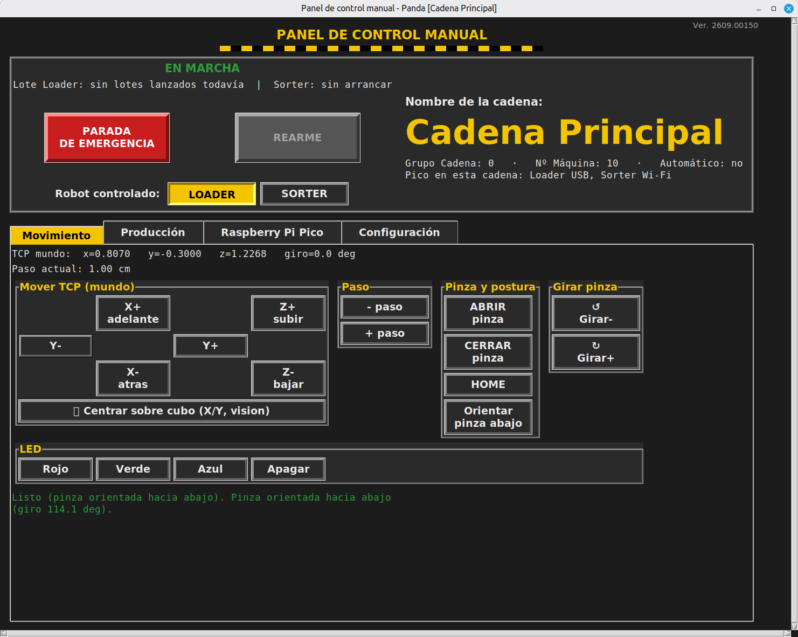
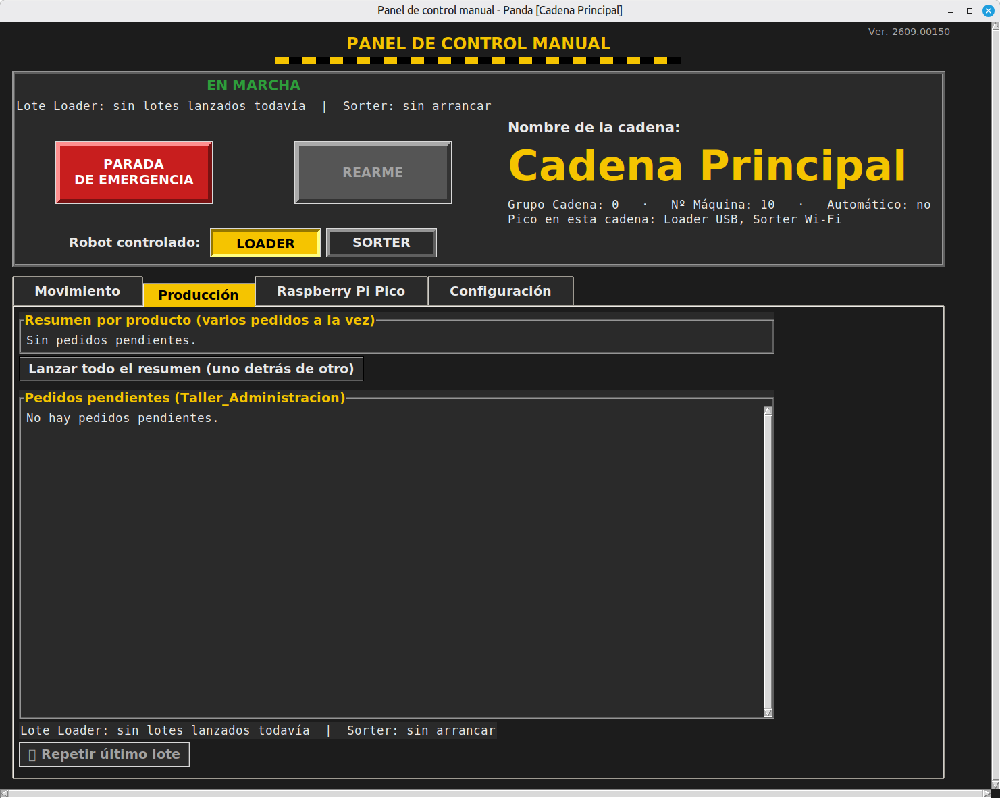
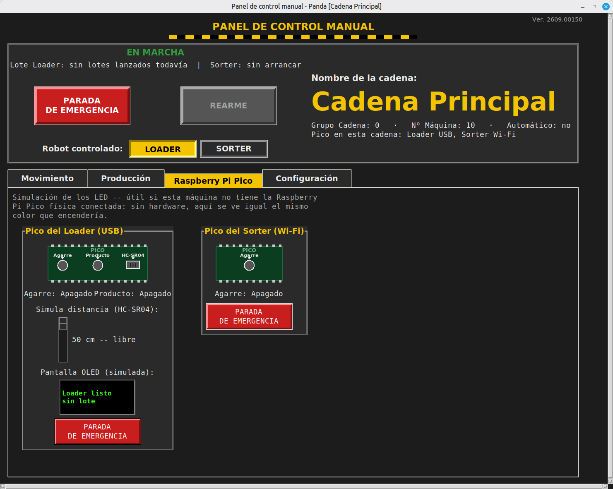
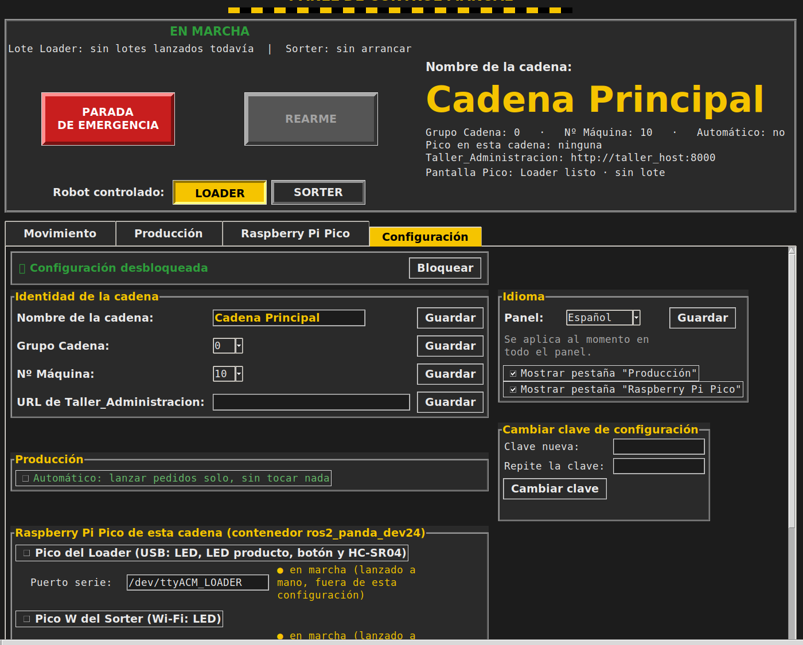

Documentación técnica · Lab.Panda 2.4 · Panel de control
Es la ventana que se abre al final del arranque (teleop_gui) — desde aquí se mueve el brazo a mano, se lanza producción y se ve el estado de la celda de un vistazo. Cada línea de producción tiene la suya propia, independiente de las demás.

Da igual en qué pestaña estés: esto se ve siempre arriba del todo.
Botones para desplazar la pinza en las 3 direcciones del espacio (adelante/atrás, izquierda/derecha, subir/bajar), con un tamaño de paso ajustable ("Paso"), más botones para abrir/cerrar la pinza, girarla, llevarla a HOME (posición de reposo) u orientarla mirando hacia abajo. También hay botones sueltos para encender el LED de agarre en rojo/verde/azul o apagarlo, y un botón para centrar el brazo sobre un cubo usando la cámara.
Aquí se ve la lista de pedidos pendientes del panel web (Taller_Administracion) y hay un botón "Lanzar este pedido" por cada uno — al pulsarlo, el Loader y el Sorter se ponen a fabricar esa cantidad exacta solos. También hay un resumen agrupado por producto con un botón "Lanzar todo", "Lanzar todo el resumen" (los encadena todos, uno detrás de otro) y el Modo Automático (los lanza solo, sin confirmar); y "Repetir último lote" para relanzar exactamente lo último que se lanzó, sin tener que volver a elegirlo.
Se lance como se lance, la pantalla OLED y el resumen de "Lote en curso" muestran siempre el nombre del producto, la variante y el código — con una excepción: si un lote agrupado mezcla pedidos de varias variantes distintas del mismo producto a la vez (p.ej. arandelas de 10mm y de 20mm juntas en el mismo "Lanzar todo"), no hay una única variante que mostrar y se deja solo el nombre del producto.

Simula, con un dibujo, las dos Raspberry Pi Pico de la celda: sus LED (de agarre y de producto) con el mismo color y parpadeo que tendrían de verdad, la pantalla OLED del Loader mostrando el producto en curso, y un control que simula el sensor de proximidad HC-SR04. Útil en cualquier máquina que no tenga el hardware físico conectado — la simulación escucha los mismos datos que usaría la Pico real, así que se ve exactamente lo mismo. Cada recuadro lleva también su propio botón de parada de emergencia.

Todo aquí empieza bloqueado — hay que pulsar "Desbloquear (clave)" e introducir la clave maestra para poder tocar nada, y se vuelve a bloquear sola al cambiar de pestaña. Desde aquí se ajusta: el nombre de la cadena, el idioma del panel, qué pestañas se ven (se puede ocultar Producción o Raspberry Pi Pico si esta línea no las usa), el Grupo Cadena y Nº Máquina (para que el reparto de pedidos no se cruce entre líneas), si la producción automática está activada, qué Raspberry Pi Pico están asignadas a esta cadena, y la URL de Taller_Administracion (solo hace falta tocarla si esta línea vive en otro ordenador distinto del de la web de pedidos).
Cambiar la clave. Con la pestaña desbloqueada hay un recuadro Cambiar clave de configuración justo debajo de Idioma: se escribe la clave nueva dos veces y solo se guarda si coinciden y tienen al menos 4 caracteres. Cada línea tiene la suya, se guarda cifrada y no se pierde al reiniciar. De fábrica es 1111.
Si se olvida la clave. Se borra la entrada clave_config del fichero config_maquina_*.json de esa línea (está en ros2_ws/) y el panel vuelve a aceptar la 1111 de fábrica. Hace falta estar en el ordenador de la máquina.
Restablecerla con el botón (como un router). Con la pestaña Configuración o Raspberry Pi Pico abierta, mantén pulsado 10 segundos el botón de la Pico USB del Loader (o cualquiera de los dos botones rojos PARADA DE EMERGENCIA simulados de la pestaña Raspberry Pi Pico: verás la cuenta atrás debajo). El panel pregunta si quieres volver a la clave de fábrica (1111); al confirmar, la pantalla OLED muestra unos segundos Contrasena reseteada. En cualquier otra pestaña la pulsación larga se ignora. La parada de emergencia salta igual al primer toque: los 10 segundos solo cuentan para esto. Más detalle en Cableado del pulsador.
